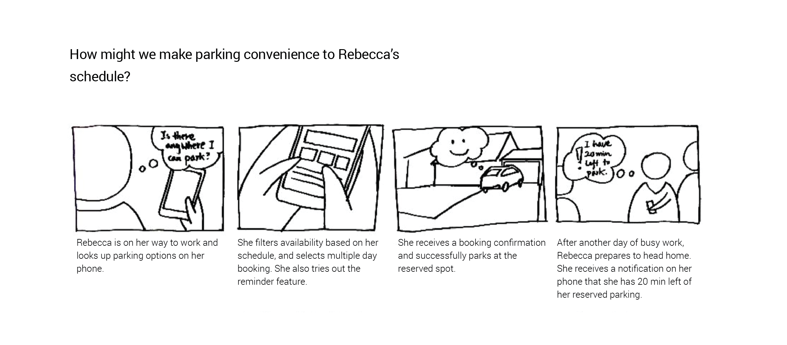

Design Outcome
Private citizens are realizing that assets they own can be valuable to other citizens. What is needed is a way for these peers to connect an available asset with a need. Park Helper is an app designed to provide such a service to property owners and drivers: it offers safe and convenient parking options at budget-friendly cost. While drivers benefit from a reliable alternative to street parking, property owners receive extra income by making their space available.

Design process
Ecosystem Brain Dump
and Research
We started the project by putting on paper everyone's knowledge of the design situation. The tool we used was an ecosystem dump, which revealed what we knew as a team and what we needed to learn. This step was helpful in planning effective guerrilla research which followed.
Our research consisted of two parts. First, we conducted a guerrilla research to ground our personas. Second, we performed conceptual research to learn about existing products that perform a similar role.
Formulating Goals for Design
Through research, we learnt about our stakeholder's current parking behavior:
/ A typical driver find free parking on street (avg time 5-10min)
/ More than 10 minutes would be painful
/ Goes early to find free parking
/ Wants to have some expectations of where and how much to pay
/ Goes to familiar spot with prior knowledge
We saw that in order to be successful, our app needed to be cost-friendly, secure, and convenient.
Exploring Concepts with
Storyboards
We created 20 storyboards to explore possible ways this app might take shape. From this collection, we narrowed down to 3, which demonstrate how the app provides value to both stakeholders.
Creating Value for Drivers and
Property Owners
In this wireframe, Rebecca, who is a driver, searches for a parking spot. She chooses one of the options presented, and puts forward a request for reservation. Madeline, who is the property owner, receives a notification on her mobile. She looks at Rebecca's profile to learn about her background, and decides to approve the request. Rebecca now can enjoy the parking spot at a low cost by providing a service to Madeline in exchange.
You Might Also Like
project home.io | ux design
Reimagining the Future of IoT and In-home Robotics
finally campaign | branding, digital marketing
© 2016 made by angel shi yao Yu